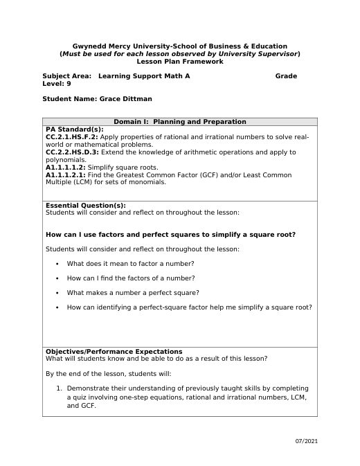

Grace Dittman
Block 2 Math
Block 3 Math
ESS
Lesson Plans
Résumé
Photos
Search
Home
›
Block 3 Math
›
Week 3
›
Lesson Plans
Lesson Plans
← Canva Slides
Notes →

B3_9-14_15LessonPlan
B3_9-14_15LessonPlan.docx
Ordering Numbers, Absolute Value & Order of Operations
B3_9-16_17LessonPlan.docx
Evaluating Expressions with Substitution
B3_9-18_9-22LessonPlans.docx
← Canva Slides
Notes →